Louis Joel Mordell (1888-1972)
This small section is
essentially
about the deep question:
how close can squares and cubes get to each other
?
You may view a photograph of Mordell in the Oxford 1969 corner of my web site, and a short account of a conversation I had with him at the time the photograph was taken. Here I mention only one famous result of Mordell - which is intimately related to Thue's theorem - and here mention that both Thue and Mordell relate to later profound work of Alan Baker.
Some (fast-track!) background. Everyone knows the squares: 0, 1, 4, 9, 16, ... , and it is trivial to explain why the successive differences between them, namely 1, 3, 5, 7, ... , follow a predictable pattern:
it's simply that
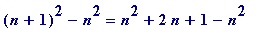
=
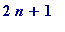
, and the terms of the sequence {
} are merely 1, 3, 5, 7, ... . The same sort of thing happens with cubes, though now the first sequence of differences behaves quadratically, while the second sequence of differences behaves linearly:
The cubes are: 0, 1, 8, 27, 64, 125, 216, ...
The differences: 1, 7, 19, 37, 61, 91, ...
Their differences: 6, 12, 18, 24, 30, ... [and it's an easy exercise to explain why...]
But now for something quite different . The mixed sequence of all squares and cubes (the ones in the larger font size are those that are both a square and a cube, and so are a sixth power) starts like this:
0 , 1 , 4, 8, 9, 16, 25, 27, 36, 49, 64 , 81, 100, 121, 125, ...
Now look at the successive differences: 1, 3, 4, 1, 7, 9, 2, 9, 13, ... . As you see, the differences are most certainly not monotonic - as was the case with the squares and cubes separately - and jump about all over the place ('live' I can vary the 'bound' - I'll probably make it be 100000 (a lakh in India) - just to allow the third '17' difference to be seen; but in the fixed html version I will probably set it at 1000):
>
bound := 1000:
Ss := {}: for k from 0 while k^2 <= bound do
Ss := {op(Ss), k^2} od: Ss:
Sc := {}: for k from 0 while k^3 <= bound do
Sc := {op(Sc), k^3} od: Sc:
mixed := Ss union Sc; N := nops(mixed):
differences := [seq(mixed[k+1] - mixed[k], k=1..N-1)];
differ_occur := sort(differences);
>
Some (fast-track) observations and questions (see the Alan Baker section later).
First a trivial ovservation: it is completely elementary to determine all possible integral square that differ by a given amount. For example, let's find all squares differing by (say) 15. I omit all obvious comment concerning 15 being minus 5 times minus 3 etc. 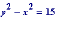 , , gives possibilities:
- y + x = 15 and 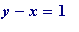 , thus y = 8 and x = 7
- y + x = 5 and 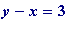 , thus y = 4 and x = 1
And thus 49 and 64 (which are consecutive), and 1 and 16 are the only squares that differ by 15. A similar check will reveal the unsurprising fact that there are no squares that differ by (e.g.) 8. A similar analysis may be made for cubes differing by a given amount; one uses the factorisation 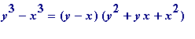 .
But it's an entirely different matter for the mixed squares and cubes (and do bear in mind that there are all those other difficult variations: squares and first powers, cubes and fifth powers, ... )
Observation I. 8 and 9 are a cube and square differing by 1. Are there any others? In fact, what are the integers that satisfy the diophantine equation 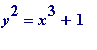 ? And the same question for 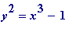 . It happens - but it is not easy to prove that, apart from the trivial 0 and 1, 8 and 9 are the only square and cube that differ by 1. It's a recently settled - and much hailed result - that 8 and 9 are the only proper powers differing by 1.
Observation II. 25 and 27 are a square and a cube differing by 2. Are there any others? Fermat reckoned - and asked around for a proof - that they were the only ones. In fact, what
are
the integers that satisfy the
Diophantine
equation
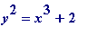
, and the same question for
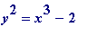
. Answers are known.
Observation III. 16 and 25 are squares differing by 9, while 27 and 36 are a cube and square differing also by 9, and (further along) 216 and 225 are another cube and square differing by 9. What are the integers that satisfy the diophantine equation 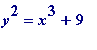 , and the same question for 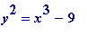 .
It is entirely trivial to find all integer solutions of (say) 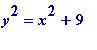 (that is not a typing error in ' 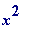 ') or all the integer solutions of 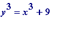 (those are cubes), but quite a different matter to determine all solutions of either or .
Mordell's Theorem (1914 and 1922). For any fixed non-zero integer
k
[positive or negative] there are only a
finite
number of integers
x
and
y
such that
 .
.
Mordell used Thue's 1909 theorem in a fundamental way in his proof; Mordell was unaware of Thue's result in 1914, and only came to hear of it much later (remember Landau's remark). A fundamental weakness in Mordell's result - which itself is related to the same in Thue's proof - is that it is ' ineffective ', meaning that while it tells us that there are only a finite number of solutions, it doesn't allow us to know when we've found all of them, if there are any, and there may be none (a nice example where there are none is provided by the equation 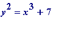 , which can be proved in a reasonably elementary way, as I sometimes show to my second year students).
Finally, and to give just a flavour of a classic hard-fought result, I mention a theorem of Nagell's (1930): the Diophantine equation
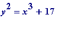
has exactly eight solutions, given by
x
= -1, -2, 2, 4, 8, 43, 52, 5234 and
y
= 4, 3, 5, 9, 23, 282, 358, 378661 respectively.
Alan Baker's arrival on the scene in the 1960s carried this subject to undreamed of heights.